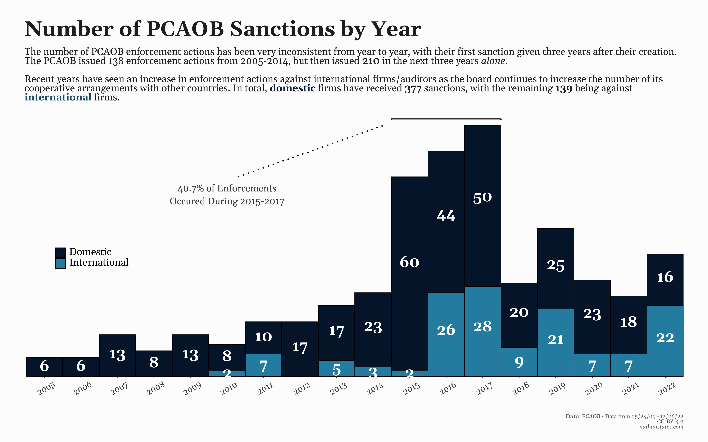

PCAOB Enforcement Actions (Part 2)
By Nathan States
December 1, 2022
- Posted on:
- December 1, 2022
- Length:
- 10 minute read, 2097 words
- See Also:
Unlike inspections, sanction reports have not changed much in content throughout the history of the PCAOB. Most enforcement actions are the result of one or multiple deficient audits, though a few involve other infractions. Some of the reports disclose the name of the company in question, which means it’s possible to track their outcomes. Given that most reports are unique, though, there’s not much consistent data to gather from each report outside of a few key variables.
Section 1.04 of Sarbanes-Oxley describes the PCAOB’s ability to sanction firms / auditors as follows.
If the Board finds, based on all of the facts and circumstances, that a registered public accounting firm or associated person thereof has engaged in any act or practice, or omitted to act, in violation of this Act […] the Board may impose such disciplinary or remedial sanctions as it determines appropriate.
Sanctions can include censure, suspension from the accounting industry, limitation of financial activities, required additional education or training, and/or a monetary penalty. Fines are broken down into two categories; regular fines, which can range from;
(A) not more than $100,000 for a natural person or $2,000,000 for any other person; and (B) in any case to which paragraph (5) applies, not more than $750,000 for a natural person or $15,000,000 for any other person;
Paragraph (5) refers to more serious violations, and are characterized by;
(A) intentional or knowing conduct, including reckless conduct, that results in violation of the applicable statutory, regulatory, or professional standard; or (B) repeated instances of negligent conduct, each resulting in a violation of the applicable statutory, regulatory, or professional standard.
The PCAOB serves under the SEC, which means the Federal Civil Penalties Inflation Adjustment Improvements Act of 2015 also applies to the board This Act adjusts monetary fines for inflation, which means maximum penalties are actually about 40% higher than the amounts listed above.
Overview #
:::{.most-width}  :::
In case the table is hard to read, enforcement action have been broken down into two main categories; sanctions against firms, and sanctions against auditors. Both the total number of sanctions and the total amount in fines are included among the eight largest firms, including a distinction between domestic and international firms. Sole proprietors make up a sizable portion of the data, so they’ve been given they’re own special category, while all other sanctions have been combined into the group, “Everything Else.”
In total, the PCAOB has sanctioned 516 firms/auditors for a total of $38,177,000. This includes both domestic and international firms. Considering that the board can impose a fine for each deficiency found during inspections, each fine can be up to $2,000,000, and that the PCAOB has found thousands of deficiencies over the past 20 years, some have argued that the board is ineffective and weak (among other reasons). This post will try and examine these claims by breaking down some key features of the data.
Enforcement Through Time #
:::{.full-width} :::
Before considering enforcement actions as a whole, it should be noted that the number of sanctions given each year by the PCAOB has varied significantly throughout the board’s history, which seems to be directly connected to differences in enforcement philosophy between changing board members. This is most evidenced by enforcement activity from 2015 - 2017, which saw the board sanction over 200 firms/auditors, comprising over 40% of total PCAOB sanctions. In February 2018, an entire new board was elected, and sanctions began to fall by about half. In a PCAOB Webinar hosted for audit committee members, newly elected PCAOB Chairman Bill Duhnke stated that the board had discovered from “feedback” that the;
“PCAOB wasn’t necessarily playing well with others, that it was rarely receptive to feedback from stakeholders […] Consequently we’ve been actively trying to change that […]
The Wall Street Journal would report in October 2019 that the board had “slowed its work amid board infighting, multiple senior staff departures, and allegations that the chairman has created a ‘sense of fear’ according to a [May 2019] whistle-blower letter and people familiar with the situation.” Dunkhe would later be investigated by the SEC for his handling of internal complaints and employee harassment, which eventually led Dunkhe and the entire board getting canned (though that didn’t stop him from returning to Capitol Hill as a Senate Aide, which is nice).
Under the new leadership of Chairman Erica Williams, while the total number of sanctions has stayed relatively similar to previous years, they do differ in that nearly 100% of them involved a monetary penalty. Prior to 2015, only 35.51% of sanctions involved a monetary fine; under Dunkhe, this was 65.74%. The only two sanctions not resulting in a monetary penalty under Williams have both explicitly stated in their reports that the board “would have imposed a civil money penalty of $25,000” had they not “taken [their] financial resources into consideration.”
On a side note, while I creating this dataset, I didn’t record the other penalty types that may have occurred, such as if the firm/auditor was censured, whether the firm/auditor was suspended or had other financial activities limited etc. All the reports do mention these explicitly, so it is possible to collect them and analyze to see how punishments have changed over the years.
It should be pointed out that the chart starts at 2005, or almost three years after the PCAOB was created. A former board member would tell the Project on Government Oversight in September 2019 that in the formative years of the PCAOB, some board members, including the original chairman, were philosophically opposed to aggressive enforcement. When the board did sanction a total of 5 firms and 7 auditors in 2005 - 2006, they chose not to impose a monetary fine on them. It wasn’t until December 2007 - over five years after the board was created - that the very first fine was given. That case involved the firm Deloitte, currently the largest audit firm in the United States, and in this rare instance, the report includes the name of the company whose audit question, which happened to be Ligand Pharmaceuticals, a drug and healthcare company.
In 2003, Ligand released a new painkiller and cancer medication treatment that sent the share price of the company soaring from $4 to almost $25 in April 2004. The audit partner in charge of the company was James Fazio, who had produced questionable work for Ligand in the past. His fellow Deloitte employees would ask him to step away, and his supervisor even urged him to resign. Still, he Deloitte would allow him to continue working with Lignad.
One of the reasons why Ligand saw such massive stock gains is because they generously allowed buyers (including wholesalers) to refund unsold drugs to the company. The auditors created a formula to estimate the total number of returns, but the PCAOB would later find that Deloitte had not challenged Fazio’s estimates despite evidence that return rates were actually much higher. After the stock plunged during the summer of 2004, Ligand would hire new auditors, who immediately restated their 2003 earnings, saying that more than half the revenue they reported in 2003 should not have been reported. This sent the share price crashing back down all the way to $4, and would it take them until 2017 - an entire thirteen years later - to reach their peak of $28 again.
Deloitte was fined a $1 million.
What Fazio and Ligand committed in this case was more or less a clever pump and dump scheme, and it hurts more than just investors. The company immediately downsized, causing hundreds to lose their jobs, and any potential 401(k)s that included matching would of taken huge hits. While most deficient audits do not result in these disastrous outcomes, there’s always a portion that do. While early iterations of the board only pursued penalties in the most severe cases, this philosophy has clearly changed since.
Big Four Comparison #
The four largest firms audit almost half of all US filers, including nearly all the companies on the S&P 500, which means they have significant influence on overall audit quality. Considering that the PCAOB has inspected a similar number of audits between the big four and all other domestic firms, we’d expect each group to receive similar discipline. This isn’t the case; the PCAOB has sanctioned domestic big four firms just five times for $6,500,000 in its 20+ year existence. Sanctions against other domestic firms are well over 200. While fines against the big four have been much harsher comparatively, they also rarely seem to get punished at all.
The breakdown in fine amounts doesn’t seem to make much sense, either. Deloitte is the best performing firm in terms of deficiency rates among its domestic affiliates, but they’ve received the most sanctions for the most amount. KPMG, the worst performing firm, has never been sanctioned ever. Not only did they post a deficiency rate of 50% from 2014 - 2017, the highest four year span among the big four, they were also fined $50 million in 2019 by the SEC for attempting to steal confidential information from the PCAOB to fraudulently improve their inspection results. An argument could be made that repeatably failing inspections, and then attempting to cheat them would fall under Paragraph 5 in terms of fines. The PCAOB evidently disagrees.
On the other hand, enforcement action against international affiliates looks much different. Among the big four, 32 international firms have been sanctioned compared to 5 domestic, and international have been fined more than double domestic firms.
:::{.most-width}
 :::
:::
Deloitte has been fined the most, which is mostly skewed because of an $8 million fine regarding its Brazilian affiliate that saw 12 auditors being barred permanently from the industry. According to the PCAOB report, Deloitte Brazil knowingly issued false audit reports in 2010 for Gol Linhas Aéreas Inteligentes (NYSE: GOL), one of Brazil’s largest airlines. When the company announced a financial restatement in August 2011, the share price dropped more than 65%, prompting an investigation. When the PCAOB asked for documentation, senior managers “attempted to cover up its violations by improperly altering documents in connection with a 2012 PCAOB inspection” and by “obstructing a subsequent investigation.”
To this day, it remains only the second time the PCAOB has invoked Paragraph 5; the other happened rather recently. On 12/06/2022, the PCAOB announced it was sanctioning three international KPMG affiliates for $7.7 million, the largest being against KPMG Colombia when they tried to alter audit documentation in anticipation of a PCAOB inspection. However, no company name is disclosed in any of the three reports.
In terms of inspection reports, Colombian affiliate have recorded a 24% deficiency rate, much lower than the average. Canada is the most inspected international country, has one of the worst deficiency rates at 45%, but has received less than $1.8 million in fines. Similar to comparisons between domestic firms, there’s little to any correlation between performance on inspection reports and the number/amount a firm will be sanctioned.
Sole Propeitors and Small Firms #
While more attention has been given to international big four firms, sole prospectors have received the most sanctions of any group at 71. If you factor in the additional 142 sanctions against domestic auditors of firms outside of the eight largest, which many are co-partnerships or under 10 employees, the majority of sanctions have been against small firms/auditors.
Many of these cases involve similar pump-and-dump schemes, often involving penny stocks, where a few auditors with presumably something to benefit will sign off on deficient audits to quickly boost the share price.
-graph-
Monetary fines outside the four largest firms are largely scattered across several small firms, with some exceptions. Grant Thornton has been fined more than PwC, Ernst & Young, and KPMG. They also sit between two firms, Crowe and BDO, that have never been sanctioned. Marcum, a fairly sizable firm, has been fined substantially more than several larger firms.
Ultimately, though, the majority of PCAOB sanctions have been against small, domestic firms and their auditors. A sizable portion of this amount have been against sole proprietors.